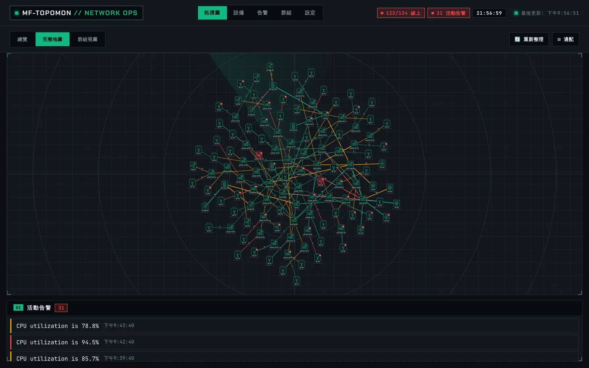
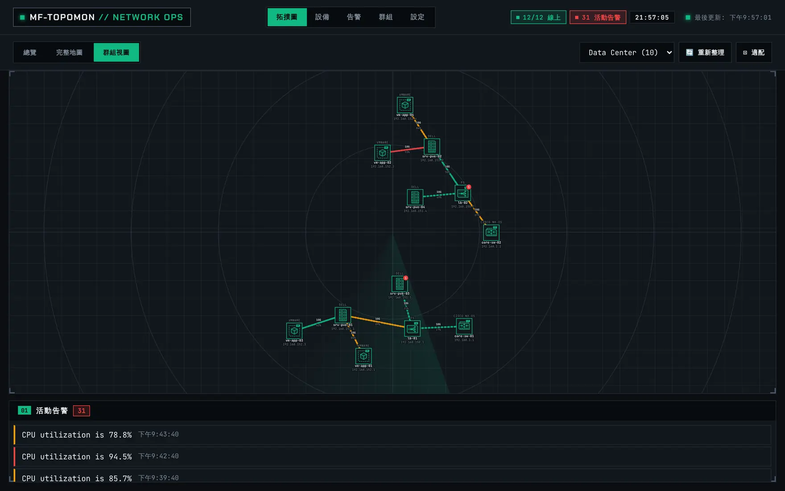
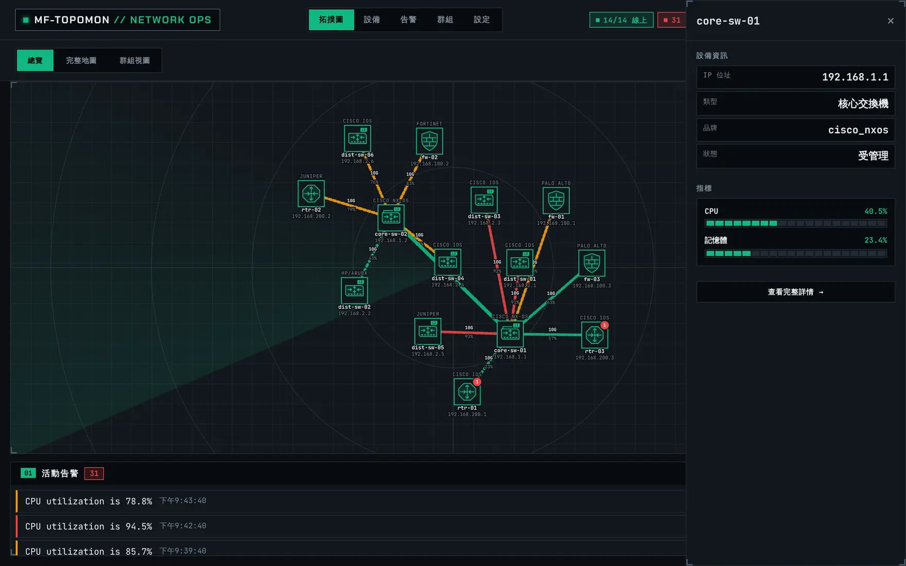
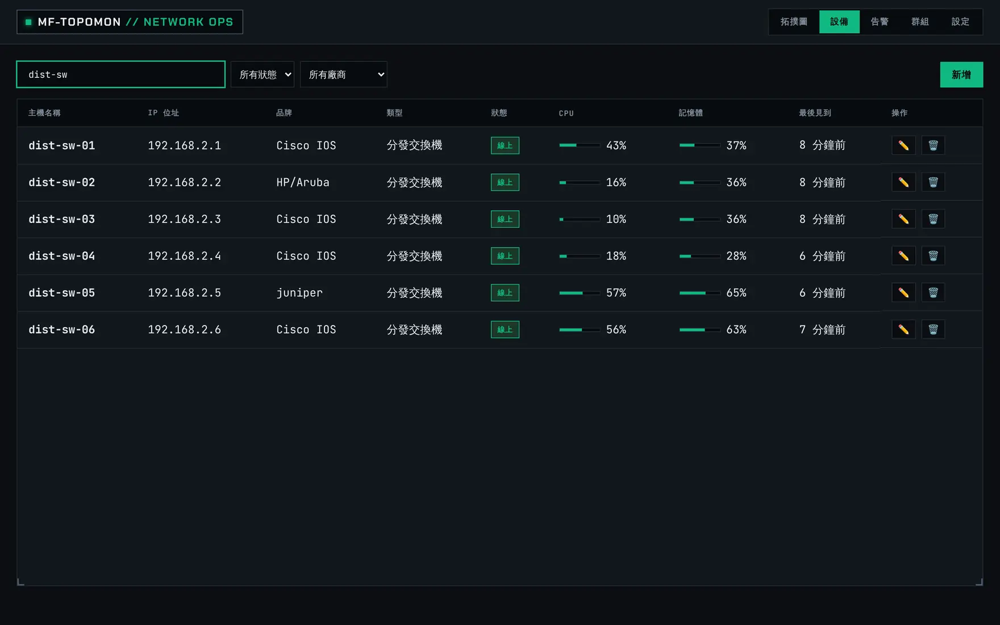
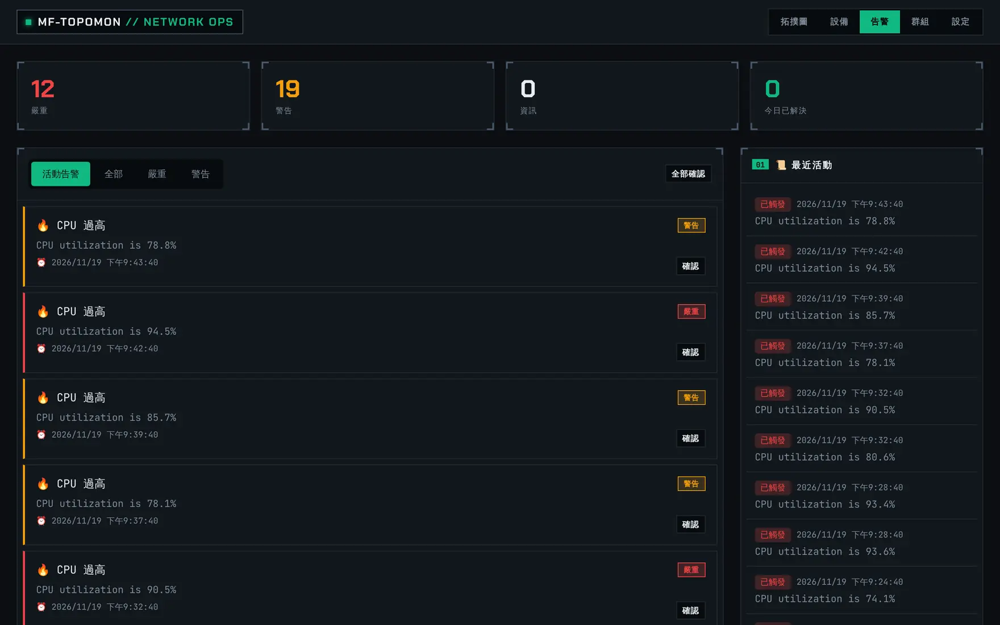
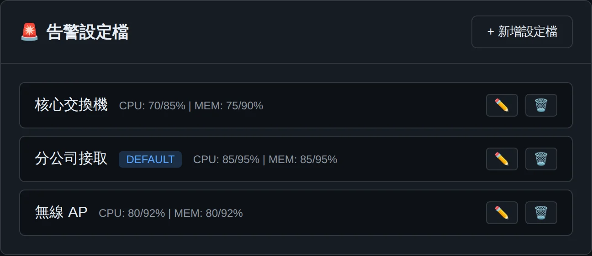
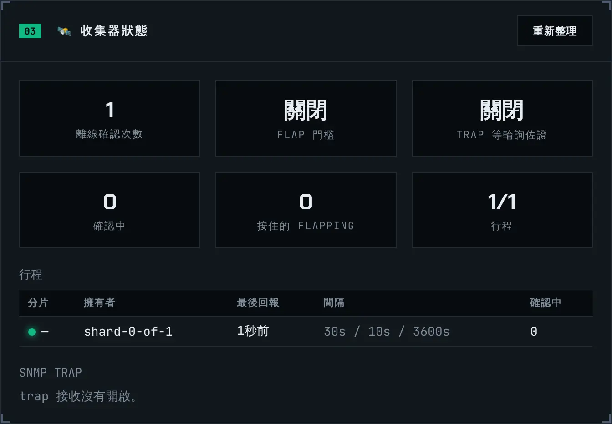
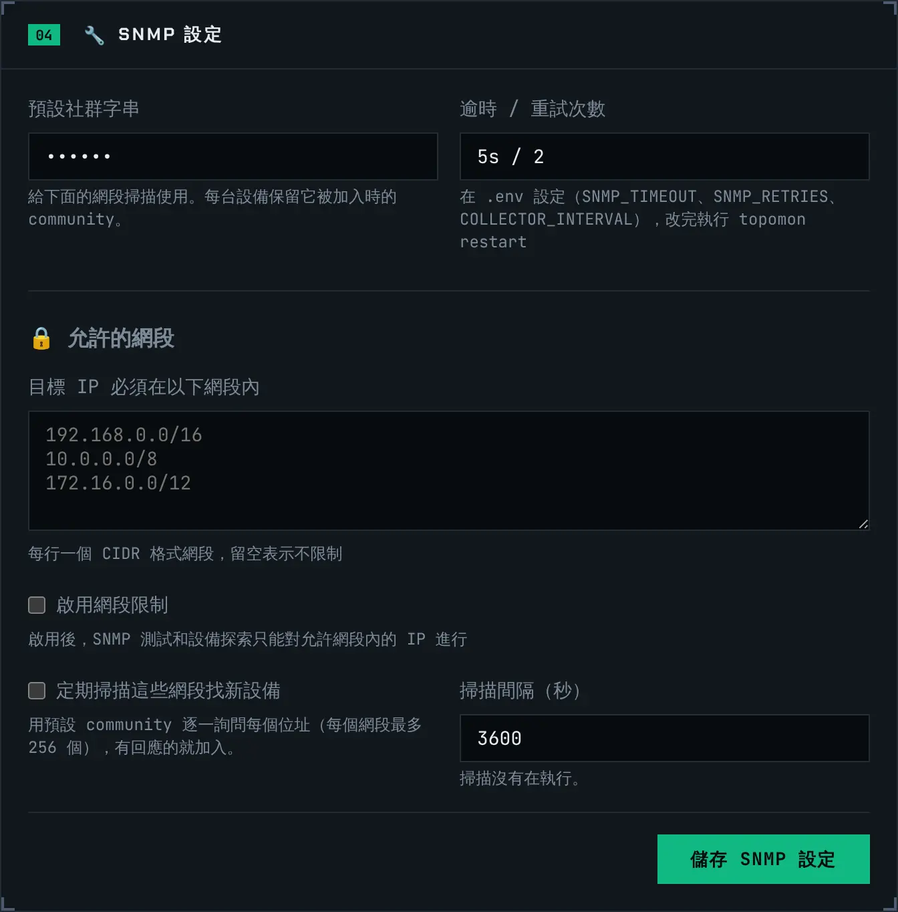
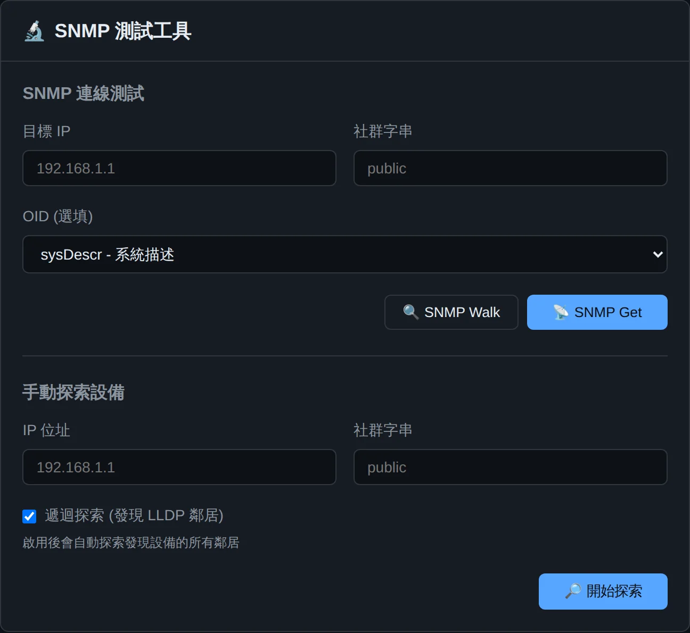

給它一台設備，整張圖自己長出來
不用填表、不用畫圖、不用在每台設備上加設定。它用你本來就在用的管理位址與 community，問設備一個它早就知道答案的問題：你的鄰居是誰。
移了一條線，下一輪盤點就反映在圖上。
新設備接上去，自己會被發現並接進拓樸。
拓樸靠設備名配對，換 IP、換網段都不影響。
核心功能
把「網路現在長什麼樣」這件事做完
從發現設備、畫出拓樸、逐條線監看，到告警與抑制 —— 不需要再接三套東西。
自動發現
給它一台設備，它會順著 LLDP／CDP 鄰居一路長出整個網路；也可以讓它定期掃過你指定的網段。
一條線只畫一條
同一條實體線兩端都會報一次。系統用設備名把兩半配成一條，多條併接的線也會收成一條，圖上不會有重複。
逐條線路監看
每條線的 up／down、協商速率與雙向流量都看得到，使用率高的線在圖上就是另一個顏色。
可調的告警
使用率、CPU、記憶體、設備離線、線路斷線都有門檻，而且可以依設備套用不同的告警設定檔。
SNMP Trap
線路一斷，設備自己會通知 —— 畫面與告警在當下就更新，不必等下一輪輪詢。輪詢仍然會再確認一次。
不會為了一個掉包吵你
可以要求連續幾輪沒回應才算離線、一直跳動的線路把告警按住不反覆開關，以及讓 trap 等輪詢確認過再發。
分層與群組
核心、匯聚、接取自動分層；也可以自己開「三樓」「無線」「WAN 邊界」這種群組，只看自己負責的那一區。
多廠牌
Cisco、HP／Aruba、Fortinet、Palo Alto、Ruckus、Juniper 等等；廠牌自動辨識，不用一台一台告訴它這是什麼。
三語介面、深淺色主題
介面支援繁體中文、簡體中文與英文，深色與淺色主題都可以用，跟著你的習慣走。
上手流程
從沒有東西，到有一張會自己更新的圖
01
安裝
一行指令，它會把需要的東西裝好並跑起來。
02
給一台設備
IP 加 community，從核心交換機開始最省事。
03
自己長出來
沿著鄰居把其他設備補齊，拓樸圖自動成形。
04
持續盯著
每條線的狀態與流量固定回報，不需要你再做什麼。
05
出事通知你
哪一條線、哪個埠、什麼時候、多嚴重。
拓樸圖
三種看法，從骨幹到全貌
節點是設備，線是真的接著的線。線上標著協商速率與目前使用率，顏色會隨著壓力改變。
- 總覽：只畫核心與匯聚的骨幹，一眼看出主幹線的狀況。
- 完整地圖：所有設備一次攤開，連無線 AP 都在上面。
- 群組視圖：按樓層或角色切片，大網路不會變成毛線球。
- 點一台設備：右側立刻列出它的狀態、負載與目前的告警。
- 線的顏色：使用率越高越偏暖色，斷掉的線一眼就找得到。




設備端要改什麼？什麼都不用。
不必加 loopback、不必指定 trap 來源位址、不必為了這套系統多開一組帳號。拓樸靠設備自己回報的名字配對，跟 IP 無關；而 SNMP trap 會比對設備回報過的每一個位址，所以從任何一個介面送出來的通知都認得出來。
比較
跟現在的做法比
多數人今天就是靠這兩種：一張畫好就開始過期的圖，加上一套只知道「整台設備在不在」的監控。
| 試算表／手畫圖 | 只 ping 的監控 | mf-topomon | |
|---|---|---|---|
| 知道誰接誰 | 要手動維護，一移線就過期 | 不知道 | 設備自己說的，每輪更新 |
| 線斷的時候 | 圖上看不出來 | 只知道整台不見了 | 指到那一條線與那個埠 |
| 新設備上線 | 要記得補上去 | 要手動加 | 沿著鄰居自動發現 |
| 流量與使用率 | 沒有 | 看得到介面，對不到線 | 每條線雙向，直接畫在圖上 |
| 告警 | 沒有 | 設備離線 | 線路、使用率、CPU、記憶體，門檻可調 |
| 誤報 | — | 掉一個封包就叫人 | 確認次數、flap 抑制、trap 等輪詢佐證 |
| 設備端要改設定 | — | 看工具而定 | 完全不用 |
| 資料放哪 | 某個人的電腦裡 | 看工具而定 | 你自己的機房，不離開 |
畫面
實際的介面
以下都是系統真實的畫面，資料為示範用的網路。
設備清單
全部設備一頁看完：型號、廠牌、角色、CPU 與記憶體、最後一次回應是多久以前。狀態用顏色標，不用逐行讀。

搜尋與篩選
打幾個字就只剩下你要的那一批 —— 某一層樓、某個廠牌、只看離線的。設備多了之後，這是每天都會用到的一欄。

告警中心
分成嚴重與警告，可以逐筆確認或一次全部確認。右邊是最近發生了什麼 —— 不用翻日誌就知道這段時間網路過得好不好。

告警設定檔
核心交換機要嚴一點、分公司的線本來就吃得滿、無線 AP 重開是常態 —— 同一套門檻套在全部設備上只會製造雜訊。這裡可以分開設，再指派給不同設備。

群組
按樓層、按角色、按負責的人分群都可以。拓樸圖也能切成群組視圖，讓每個人只看自己那一區。

它自己也看得見
收集器正在做什麼，不用去翻日誌：幾個行程在跑、多久回報一次、有幾台正在確認離線、哪幾條線被按住、收到多少 trap。監控系統最怕的就是它自己悄悄停掉。

SNMP 設定
預設 community、輪詢間隔、逾時與重試，還有自動發現要掃哪些網段 —— 以及一個「只准碰這些網段」的開關，免得掃到不該掃的地方。

測試工具
加設備之前先問一句：這個 IP 用這組 community 回不回話、LLDP 鄰居讀不讀得到。十秒鐘分清楚是「設備沒開 LLDP」還是「community 打錯」。

換個語言、換個主題
同一個畫面的淺色主題與英文介面。繁體中文、簡體中文、English 都可以切，深淺色也是。

部署形態
從一台機器開始，長大了再說
一台就夠
一般規模的園區網路，單機跑得很輕鬆。安裝腳本把資料庫、介面與收集器一起帶起來。
設備多了就加行程
收集器可以切成幾份，各管一批設備。整機群只該做一次的事會自動由其中一個負責，掛掉會有人接手。
全部在你的機房
不連雲端、不回報任何東西。介面本身有密碼保護，而且只有反向代理對外，應用程式與資料庫只在本機聽。
安裝
一行裝完，之後都用同一個指令
一台乾淨的 Ubuntu 就夠。它會把需要的東西裝好、產生好密碼與憑證、把服務跑起來，然後把網址和帳密印給你。
# 在一台乾淨的 Ubuntu 上
curl -fsSL https://raw.githubusercontent.com/nox913106/net-lldp-topo/main/install.sh \
| sudo bash
# 跑完會印出：
Web UI https://10.0.0.20/
登入帳密（只會顯示這一次）：admin / ••••••••••••原始碼目前是私有的，安裝時要附上存取權杖；完整寫法在部署文件裡。
topomon health
一次檢查每一層：服務、代理、認證、資料庫、收集器。全部正常才算通過，可以直接接到監控上。
topomon update
更新到最新版並重新檢查。檢查沒過會自動退回更新前的版本，不會把你留在壞掉的狀態。
topomon backup
備份資料庫，舊的備份自動輪替。需要的時候可以還原回去。
topomon logs
跟著看任何一個服務的日誌，查問題不用先去找檔案放在哪裡。
# 每天會用到的就這幾個
sudo topomon health # 全部正常嗎
sudo topomon update # 更新（沒過會自己退回去）
sudo topomon backup # 備份資料庫
sudo topomon logs collector介面是有密碼的。對外只開反向代理，而且會轉到加密連線；應用程式與資料庫只在本機聽。連 API 的互動式文件頁都要登入 —— 因為從那裡可以直接操作整套系統。
支援範圍
它跟什麼東西講話
設備
- Cisco IOS／NX-OS
- HP ProCurve、Aruba
- Fortinet FortiGate
- Palo Alto Networks
- Ruckus（AP／SmartZone／Unleashed）
- Juniper、Extreme 等其他支援 LLDP 的設備
協定
- LLDP 為主，CDP 作為補充
- SNMP v1／v2c／v3（含加密與驗證）
- SNMP Trap（linkDown／linkUp）
- Log 可送到 Elasticsearch 或 Graylog
執行環境
- Ubuntu 22.04／24.04（或 Debian）
- Docker Compose，安裝腳本會自己裝
- 瀏覽器：Chrome、Firefox、Edge、Safari
- 全程在你自己的機房，資料不離開